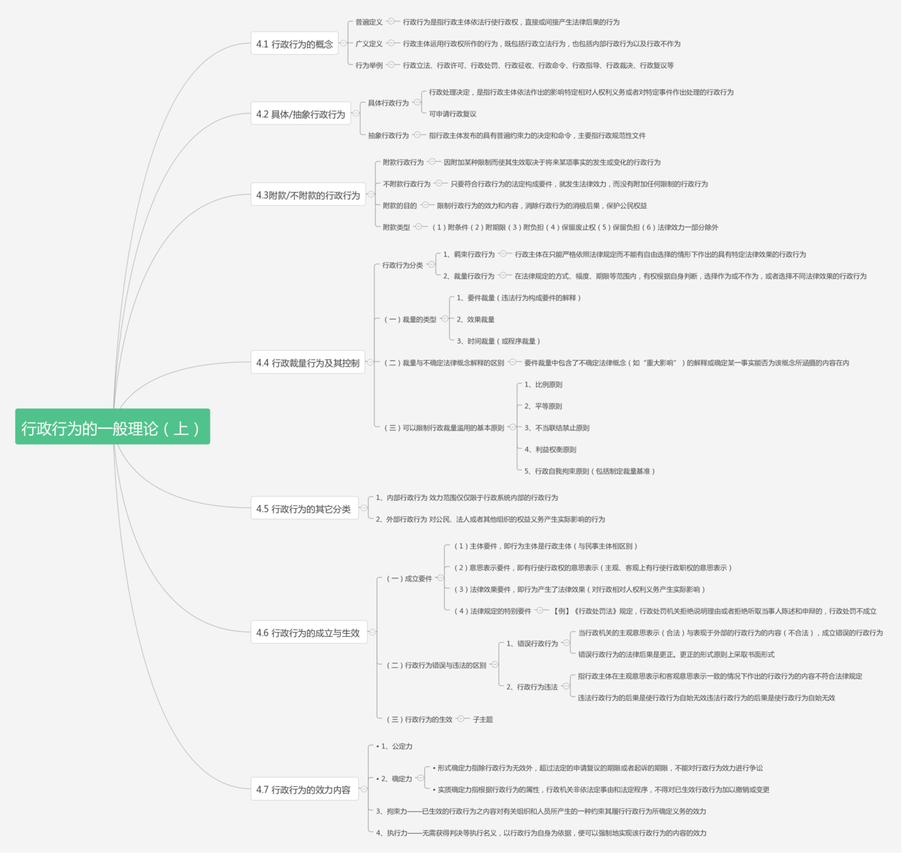

五、行政行为的一般理论（上）
（一）行政裁量的基本原则
• 1、比例原则
• 2、平等原则
• 3、不当联结禁止原则
• 4、利益权衡原则
• 5、行政自我拘束原则（包括制定裁量基准）
（二）行政行为的成立的要件
（1）主体要件，即行为主体是行政主体（与民事主体相区别）。
（2）意思表示要件，即有行使行政权的意思表示（主观、客观上有行使行政职权的意思表示）。
（3）法律效果要件，即行为产生了法律效果（对行政相对人权利义务产生实际影响）。
（4）法律规定的特别要件。 –【例】《行政处罚法》规定，行政处罚机关拒绝说明理由或者拒绝听取当事人陈述和申辩的，行政处罚不成立。
（三）行政行为错误与违法的区别
1、错误行政行为是当行政机关的主观意思表示（合法）与表现于外部的行政行为的内容（不合法）不一致，表示错误极其明显以及这种错误系因疏忽大意所致时，就成立错误的行政行为。
PS：错误行政行为的法律后果是更正。更正的形式原则上采取书面形式
2、行政行为违法指的是行政主体在主观意思表示和客观意思表示一致的情况下作出的行政行为的内容不符合法律规定。
PS：违法行政行为的后果是使行政行为自始无效
（四）——行政行为的执行效力
执行力——无需获得判决等执行名义，只需以行政行为自身为依据，根据法律的规定，便可以强制地实现该行政行为的内容的效力。
